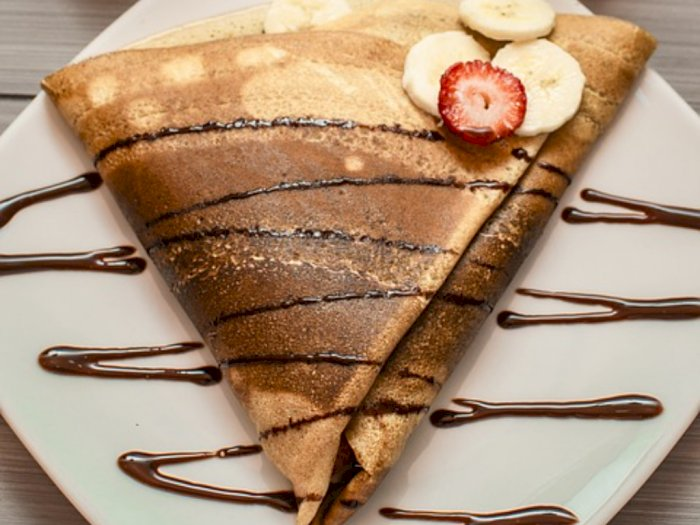
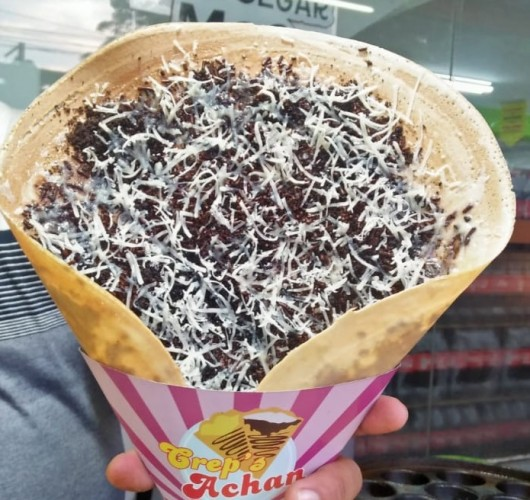
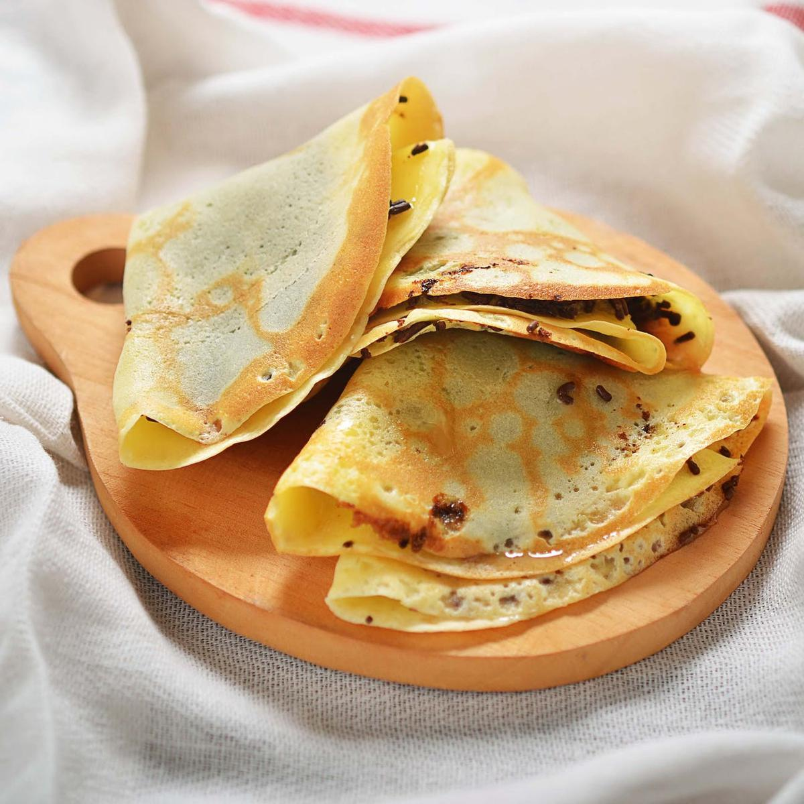

Crepes berasal dari Bretagne, Prancis bagian barat, dan di sana dikenal dengan sebutan kramphouezh. Di Bretagne, crepes biasanya disajikan dengan saus apel. Sumber sejarah menyebutkan bahwa di Irlandia crepes sudah jadi santapan masyarakat sejak abad 18. Sedangkan beberapa sumber juga menyebutkan bahwa resep crepes pertama kali ditemukan dan dibuat di Perancis pada 1390-an.
Kue cepres manis biasanya disajikan sebagai pencuci mulut atau hidangan penutup (dessert), sedangkan untuk kue crepes asin sebagai sajian hidangan pembuka. Crepes manis sendiri seringnya dibuat dengan bahan utama tepung terigu, sedangkan crepes asin dibuat dengan tepung buckwheat.Sebagai salah satu jajanan yang begitu populer dan digemari oleh berbagai kalangan baik tua maupun muda, tidak heran jika kamu dapat menjumpai pedagang kue crepes di berbagai sudut kota. Akan tetapi, kamu tak perlu membeli kue ini jika hanya untuk bisa menikmati renyahnya crepes.
